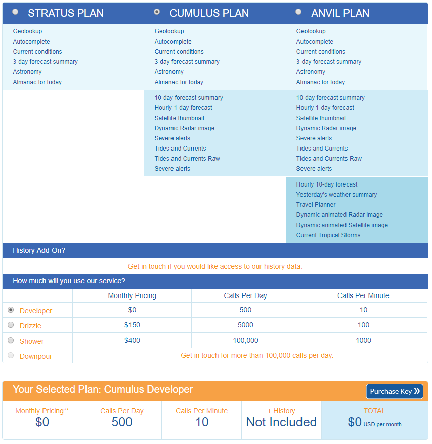

from IPython.display import Image
Image('WU_API.png')
Birol Yüceoğlu
March 22, 2018
Önceki yazılarımızda Star Wars ve FourSquare için uygulama ara yüzlerini (API, Application Programming Interface) kullanmayı görmüştük. API’ları kullanarak çeşitli kaynaktan verilere erişmek, bu verilerle uygulama geliştirmek mümkün. Özellikle hava durumu, sosyal medya ya da demografik veriler gibi kaynaklar, modellerinizde sadece iç kaynaklı verilerle açıklayamayacağınız değişiklikleri anlamanızı sağlayabileceği için yararlı.
Bu yazıda da hava durumu ile ilgili hizmetler sunan Weather Underground sitesinin API’ını kullanmayı öğreneceğiz. Hava durumunun satışlar ve ruh hali üzerine etkilerini araştıran bir çok makale var. Weather Underground, güncel hava durumunun yanında 3 ve 10 günlük tahminler ve (kısıtlı da olsa) geçmiş hava durumu verisine de sahip.
Weather Underground API’ını kullanmak için web sayfasından bir kullanıcı oluşturmak yeterli. Ancak ücretsiz olan Developer tipi hesap için günlük limit 500 sorgu, dakikalık limit ise 10 sorgu. Sorgu limitini arttırmak için ödeme yaparak farklı statüdeki kullanıcı hesapları alabilirsiniz.
API bir çok programlama diliyle kullanılabiliyor. API dokümantasyonu çok açıklayıcı değil ancak Twitter ve Foursquare gibi API’ların aksine güçlü bir destek hizmetleri var ve sorularınız için kullanıcı forumlarını kullanabilirsiniz.
Planlar ve kullanıcı limitlerini aşağıda görebilirsiniz.
Kullanıcınızı oluşturduktan sonra Weather Underground size bir kullanıcı anahtarı (key) sağlıyor. Bu anahtarı sorgu adreslerine eklemeniz gerekecek.
İlk olarak, gerekli kütüphaneleri yükleyelim. Bu kütüphaneler API sorgusunun cevabını almak ve veriyi JSON formatına çevirmek için gerekli.
Kullanıcı oluşturduktan sonra API anahtarını ve lokasyonu kullanarak ilk sorgumuzu yapalım. Veri formatı JSON, verideki anahtarları öğrenmek için dokümantasyonu kullanabilirsiniz.
İlk sorguyu içeren aşağıdaki adreste
conditions yaptığımız sorgu tipini (farklı sorgu tipleri de göreceğiz),Turkey/İstanbul da sorgulamak istediğimiz yeri belirtiyor.Kısaca sorgu, İstanbul’un güncel hava durumunu sorguluyor. Sorgunun sonuna json şeklinde uzantı da eklememiz gerekiyor.
# xxxx yerine kendi anahtarınızı girmeniz gerekiyor.
f = request.urlopen('http://api.wunderground.com/api/xxxx/conditions/q/Turkey/Istanbul.json')
# Aldığımız yanıtı JSON formatına çevirip, formatlıyoruz.
json_string = f.read()
parsed_json = json.loads(json_string)
print(json.dumps(parsed_json, indent = 4))
f.close(){
"response": {
"version": "0.1",
"termsofService": "http://www.wunderground.com/weather/api/d/terms.html",
"features": {
"conditions": 1
}
},
"current_observation": {
"image": {
"url": "http://icons.wxug.com/graphics/wu2/logo_130x80.png",
"title": "Weather Underground",
"link": "http://www.wunderground.com"
},
"display_location": {
"full": "Istanbul, Turkey",
"city": "Istanbul",
"state": "34",
"state_name": "Turkey",
"country": "TU",
"country_iso3166": "TR",
"zip": "00000",
"magic": "124",
"wmo": "17060",
"latitude": "41.00999832",
"longitude": "28.95000076",
"elevation": "28.0"
},
"observation_location": {
"full": "Cihann\u00fcma, Be\u015fikta\u015f, ",
"city": "Cihann\u00fcma, Be\u015fikta\u015f",
"state": "",
"country": "TR",
"country_iso3166": "TR",
"latitude": "41.047535",
"longitude": "29.006390",
"elevation": "240 ft"
},
"estimated": {},
"station_id": "IBEIKTA6",
"observation_time": "Last Updated on March 20, 8:42 AM +03",
"observation_time_rfc822": "Tue, 20 Mar 2018 08:42:52 +0300",
"observation_epoch": "1521524572",
"local_time_rfc822": "Tue, 20 Mar 2018 08:43:43 +0300",
"local_epoch": "1521524623",
"local_tz_short": "+03",
"local_tz_long": "Europe/Istanbul",
"local_tz_offset": "+0300",
"weather": "Mostly Cloudy",
"temperature_string": "53.4 F (11.9 C)",
"temp_f": 53.4,
"temp_c": 11.9,
"relative_humidity": "81%",
"wind_string": "Calm",
"wind_dir": "WNW",
"wind_degrees": 293,
"wind_mph": 0.0,
"wind_gust_mph": 0,
"wind_kph": 0,
"wind_gust_kph": 0,
"pressure_mb": "1002",
"pressure_in": "29.59",
"pressure_trend": "-",
"dewpoint_string": "48 F (9 C)",
"dewpoint_f": 48,
"dewpoint_c": 9,
"heat_index_string": "NA",
"heat_index_f": "NA",
"heat_index_c": "NA",
"windchill_string": "NA",
"windchill_f": "NA",
"windchill_c": "NA",
"feelslike_string": "53.4 F (11.9 C)",
"feelslike_f": "53.4",
"feelslike_c": "11.9",
"visibility_mi": "6.0",
"visibility_km": "10.0",
"solarradiation": "--",
"UV": "-1",
"precip_1hr_string": "0.00 in ( 0 mm)",
"precip_1hr_in": "0.00",
"precip_1hr_metric": " 0",
"precip_today_string": "0.00 in (0 mm)",
"precip_today_in": "0.00",
"precip_today_metric": "0",
"icon": "mostlycloudy",
"icon_url": "http://icons.wxug.com/i/c/k/mostlycloudy.gif",
"forecast_url": "http://www.wunderground.com/global/stations/17060.html",
"history_url": "http://www.wunderground.com/weatherstation/WXDailyHistory.asp?ID=IBEIKTA6",
"ob_url": "http://www.wunderground.com/cgi-bin/findweather/getForecast?query=41.047535,29.006390",
"nowcast": ""
}
}Döndürülen veride aşağıdaki kalemler var:
response: Döndürülen cevabın durumunu burada bulabilirsiniz. Alacağınız hataları buradan kontrol edebilirsiniz.current_observation şu anki hava durumu altında aşağıdaki bilgiler var:
display_location ve observation_location hava durumu sorgusunun yapıldığı ve ölçümün alındığı yerin bilgilerini içeriyor.Hava durumu tahminlerine forecast sorgusuyla erişebiliriz. forecast yarım günlük tahminler şeklinde önümüzdeki üç günü tahmin ediyor. Daha uzun süreli tahmin için ise forecast10day sorgusunu kullanabilirsiniz. Hava durumu tahmini aynı zamanda simpleforecast anahtarının altında da bulunmakta. Buradaki veriler tablo formatına daha yakın.
f = request.urlopen('http://api.wunderground.com/api/xxxx/forecast/q/Turkey/Istanbul.json')
json_string = f.read()
parsed_json = json.loads(json_string)
print('Metin halindeki hava durumu tahmini')
print(json.dumps(parsed_json['forecast']['txt_forecast']['forecastday'][3], indent = 4))Metin halindeki hava durumu tahmini
{
"period": 3,
"icon": "nt_chancerain",
"icon_url": "http://icons.wxug.com/i/c/k/nt_chancerain.gif",
"title": "Wednesday Night",
"fcttext": "Partly cloudy skies early followed by increasing clouds with showers developing later at night. Low 47F. SW winds shifting to N at 10 to 15 mph. Chance of rain 40%.",
"fcttext_metric": "Partly cloudy skies early followed by increasing clouds with showers developing later at night. Low 8C. SW winds shifting to N at 15 to 25 km/h. Chance of rain 40%.",
"pop": "40"
}Şimdi bir de simpleforecast altındaki tahmine bakalım. Göreceğiniz gibi tahmin sıcaklık, yağış, rüzgar gibi konularda çeşitli veriler içeriyor.
print('Rakamlarla hava durumu tahmini')
print(json.dumps(parsed_json['forecast']['simpleforecast']['forecastday'][0], indent = 4))
f.close()Rakamlarla hava durumu tahmini
{
"date": {
"epoch": "1521561600",
"pretty": "7:00 PM +03 on March 20, 2018",
"day": 20,
"month": 3,
"year": 2018,
"yday": 78,
"hour": 19,
"min": "00",
"sec": 0,
"isdst": "0",
"monthname": "March",
"monthname_short": "Mar",
"weekday_short": "Tue",
"weekday": "Tuesday",
"ampm": "PM",
"tz_short": "+03",
"tz_long": "Europe/Istanbul"
},
"period": 1,
"high": {
"fahrenheit": "59",
"celsius": "15"
},
"low": {
"fahrenheit": "50",
"celsius": "10"
},
"conditions": "Chance of Rain",
"icon": "chancerain",
"icon_url": "http://icons.wxug.com/i/c/k/chancerain.gif",
"skyicon": "",
"pop": 30,
"qpf_allday": {
"in": 0.0,
"mm": 0
},
"qpf_day": {
"in": 0.0,
"mm": 0
},
"qpf_night": {
"in": 0.0,
"mm": 0
},
"snow_allday": {
"in": 0.0,
"cm": 0.0
},
"snow_day": {
"in": 0.0,
"cm": 0.0
},
"snow_night": {
"in": 0.0,
"cm": 0.0
},
"maxwind": {
"mph": 30,
"kph": 48,
"dir": "WSW",
"degrees": 245
},
"avewind": {
"mph": 21,
"kph": 34,
"dir": "WSW",
"degrees": 245
},
"avehumidity": 63,
"maxhumidity": 0,
"minhumidity": 0
}Geçmiş dataya history sorgusu ile erişmek mümkün. Örnek olarak Ataşehir’e yakın bir istasyonun verisini çekebiliriz. Bunun için iki parametreye ihtiyacımız var:
history_20171231 değerini kullanacağız.Aşağıdaki sorgu o gün içindeki gözlemleri döndürüyor. Saat saat hava durumunu elde etsek de, yağış gibi veriler geçmiş veri kümelerinde bulunmuyor. Veri kümesi saat saat yapılan bütün gözlemleri içerdiğinden sadece ilk gözleme bakalım.
f = request.urlopen('http://api.wunderground.com/api/xxxx/history_20171231/q/pws:IISTANBU81.json')
json_string = f.read()
parsed_json = json.loads(json_string)
print(json.dumps(parsed_json['history']['observations'][0], indent = 4))
f.close(){
"date": {
"pretty": "12:07 AM +03 on December 31, 2017",
"year": "2017",
"mon": "12",
"mday": "31",
"hour": "00",
"min": "07",
"tzname": "Europe/Istanbul"
},
"utcdate": {
"pretty": "9:07 PM GMT on December 30, 2017",
"year": "2017",
"mon": "12",
"mday": "30",
"hour": "21",
"min": "07",
"tzname": "UTC"
},
"tempm": "9.3",
"tempi": "48.7",
"dewptm": "5.5",
"dewpti": "41.9",
"hum": "77",
"wspdm": "-1608.8",
"wspdi": "-999.9",
"wgustm": "-1607.4",
"wgusti": "-999.0",
"wdird": "-9999",
"wdire": "North",
"pressurem": "1025.6",
"pressurei": "30.29",
"windchillm": "-999",
"windchilli": "-999",
"heatindexm": "-9999",
"heatindexi": "-9999",
"precip_ratem": "-2539.7",
"precip_ratei": "-99.99",
"precip_totalm": "-2539.7",
"precip_totali": "-99.99",
"solarradiation": "",
"UV": "",
"softwaretype": "Netatmo"
}Gözlem yerel saatle 00:07’de yapılmış. Yağış ve rüzgarla ilgili kimi kalemler veri de yer alsa da (precip_ratem gibi) gözlem değerleri anlamlı durmuyor.
Belki ücretli planlarla detaylı geçmiş veriye ulaşmak mümkündür.
Weather Underground API’ını kullanarak hourly ve hourly10day sorgularıyla saatlik tahminlere, geolookup ile istediğiniz yere yakın istasyonlara, currenthurricane sorgusuyla fırtına bilgilerine, tide sorgusuyla gelgit bilgilerine ve webcams sorgusuyla istasyonların kamera görüntülerine ulaşmanız mümkün.
Saatlik hava durumu tahminiyle (hourly) bir sonraki saate bakalım.
f = request.urlopen('http://api.wunderground.com/api/xxxx/hourly/q/pws:IISTANBU81.json')
json_string = f.read()
parsed_json = json.loads(json_string)
print('Tahmin zamanı')
print(json.dumps(parsed_json['hourly_forecast'][0]['FCTTIME']['pretty'], indent = 4))
zaman = parsed_json['hourly_forecast'][0]['FCTTIME']['pretty']
print('{} için sıcaklık'.format(zaman))
print(json.dumps(parsed_json['hourly_forecast'][0]['temp'], indent = 4))
print('{} için rüzgar hızı'.format(zaman))
print(json.dumps(parsed_json['hourly_forecast'][0]['wspd'], indent = 4))
print('{} için rüzgar yönü'.format(zaman))
print(json.dumps(parsed_json['hourly_forecast'][0]['wdir'], indent = 4))
f.close()Tahmin zamanı
"9:00 AM +03 on March 20, 2018"
9:00 AM +03 on March 20, 2018 için sıcaklık
{
"english": "56",
"metric": "13"
}
9:00 AM +03 on March 20, 2018 için rüzgar hızı
{
"english": "18",
"metric": "29"
}
9:00 AM +03 on March 20, 2018 için rüzgar yönü
{
"dir": "SW",
"degrees": "229"
}Kadıköy’e yakın kişisel hava durumu istasyonlarını (personal weather station, pws) görelim. Kadıköy’ün koordinatı olarak 40.992756, 29.024704 değerlerini alabiliriz.
f = request.urlopen('http://api.wunderground.com/api/xxxx/geolookup/q/40.992756,29.024704.json')
json_string = f.read()
parsed_json = json.loads(json_string)
print(json.dumps(parsed_json['location']['nearby_weather_stations']['pws'], indent = 4))
f.close(){
"station": [
{
"neighborhood": "\u00d6zel Saint-Joseph Frans\u0131z Lisesi",
"city": "Kad\u0131k\u00f6y",
"state": "",
"country": "TR",
"id": "IKADKY6",
"lat": 40.982716,
"lon": 29.028534,
"distance_km": 1,
"distance_mi": 0
},
{
"neighborhood": "Yigit - Kalamis Residence Weather Station",
"city": "Kad\u0131k\u00f6y",
"state": "",
"country": "TR",
"id": "IKADKY4",
"lat": 40.985214,
"lon": 29.036858,
"distance_km": 1,
"distance_mi": 0
},
{
"neighborhood": "Suadiye",
"city": "\u0130stanbul",
"state": "\u0130STANBUL",
"country": "TR",
"id": "ISTANBUL189",
"lat": 40.962555,
"lon": 29.076281,
"distance_km": 5,
"distance_mi": 3
},
{
"neighborhood": "Cihann\u00fcma",
"city": "Be\u015fikta\u015f",
"state": "",
"country": "TR",
"id": "IBEIKTA6",
"lat": 41.047535,
"lon": 29.00639,
"distance_km": 6,
"distance_mi": 3
}
]
}1 ile 6 km mesafede dört istasyon olduğunu görüyoruz. İstasyonların id değerlerini başka sorgular için kullanmanız mümkün.
Bu yazının Jupyter Notebook dosyasına GitHub dizinimiz üzerinden ulaşabilirsiniz.